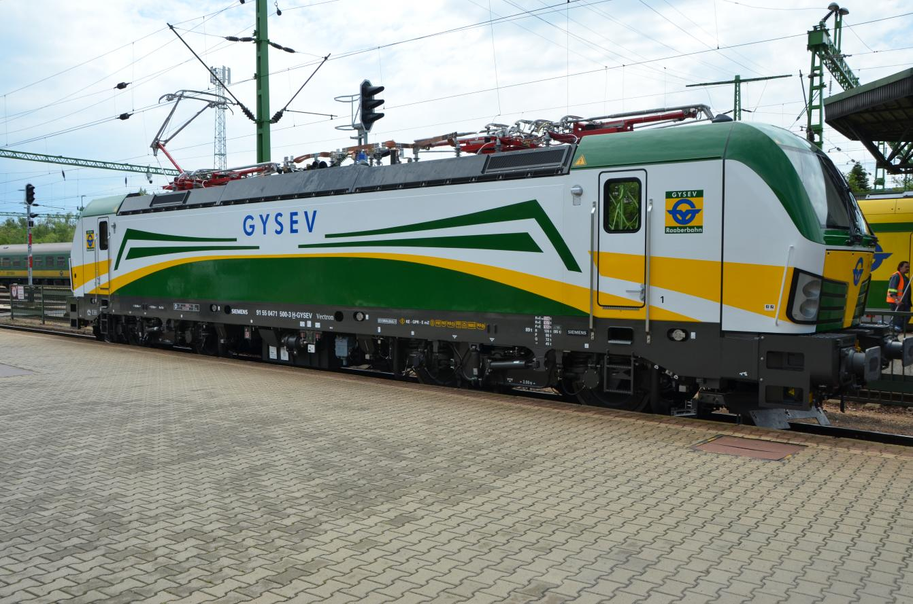

Megérkezett az első két Siemens Vectron a GYSEV flottájába
2017.05.23.
Megérkezett az első két Siemens Vectron villamos mozdony a GYSEV Zrt.-hez. A vasúttársaság márciusban jelentette be, hogy 9 darab új vontató járművet rendel a Siemenstől. A tervek szerint a gyártó még
az idei évben leszállítja az összes, megrendelt Vectron-t. A járművek a hazai személyszállításban és a nemzetközi árufuvarozásban teljesítenek majd szolgálatot.
A GYSEV Zrt. és a Siemens képviselői márciusban írták alá a beszerzési szerződést öt, ill. opcionálisan további négy villamos mozdony megrendeléséről. Azóta biztossá vált, hogy a vasúttársaság él opciós
jogával, így összesen kilenc Siemens Vectron villamos mozdonyból állhat a GYSEV flottája. A gyártó cég hónapokkal a leszállítási határidő előtt átadta az első két Vectron MS mozdonyt a GYSEV számára.
Az első, új mozdonyt május 23-án, ünnepélyesen felavatták a soproni vasútállomáson.
"Hosszú ideje terveztük és gondos munkával készítettük elő a vontató járműparkunk fejlesztését. Véleményem szerint a lehető legjobb megoldást választottuk, hiszen kedvező feltételekkel vettünk fel hitelt, a
rendelkezésünkre álló forrásból pedig az európai vasútvonalakon hosszú évek óta bizonyító Siemens Vectron mozdonyokat vásároltunk. Dinamikusan fejlődő vasúttársaságunknak nagy szüksége volt az új
vontató járművekre. Külön öröm számomra, hogy várhatóan még az idei évben az összes mozdonyt leszállítja a Siemens" - mondta Kövesdi Szilárd, a GYSEV Zrt. vezérigazgatója.

Vectron
A vasúttársaság állományába kerülő első két mozdony háromáramnemű, így az európai vasútvonalak többségén képes közlekedni. Ezeken kívül még egy háromáramnemű, ill. hat darab kétáramnemű
mozdonyt rendelt meg a GYSEV, utóbbiak közül kettőben dízel segédhajtás is rendelkezésre áll majd. A mozdonyokat elsősorban a nemzetközi árufuvarozásban használja majd a társaság, de az új
vontatójárművek megjelennek a hazai InterCity-forgalomban is. Ennek megfelelően a GYSEV Zrt. és a GYSEV CARGO Zrt. logóinak szín és formavilágát is megjeleníti az új, zöld sárga és fehér
alapszínekre festett mozdonyok arculata.
"Nagy elismerés számunkra, hogy immáron 130 éve megbízható partner lehetünk az ország vasúti közlekedésének fejlesztésében. 1887-ben az első villamos vontatású közúti vasutat, vagyis az első budapesti
villamost a Siemens hozta létre, ma pedig a GYSEV flottájának legújabb Vectron mozdonyát adhatjuk át. Vállalatunk újra bebizonyította, hogy kiemelkedő teljesítményű vasúti járműveivel méltán járul hozzá
a hazai villamos hajtású vasúti közlekedés modernizációjához" - mondta el Dr. Ludvig László, a Siemens Zrt. Mobility divíziójának vezetője.
Az első két mozdony az 471 500-as és 471 501-es pályaszámot kapta. Jelenleg a járművek hatósági engedélyeztetési eljárása zajlik, a két új villamos mozdony várhatóan júniusban állhat forgalomba.
Forrás
VISSZA